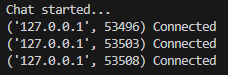
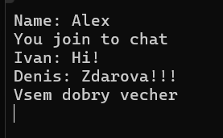
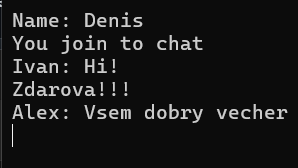

Лабораторная работа №1
Задание 4
Цель
Реализовать двухпользовательский или многопользовательский чат. Для максимального количества баллов реализуйте многопользовательский чат.
Требования
- Обязательно использовать библиотеку socket.
- Для многопользовательского чата необходимо использовать библиотеку threading.
Реализация
- Протокол TCP: 100% баллов.
- Протокол UDP: 80% баллов.
- Для UDP используйте threading для получения сообщений на клиенте.
- Для TCP запустите клиентские подключения и обработку сообщений от всех пользователей в потоках. Не забудьте сохранять пользователей, чтобы отправлять им сообщения.
Выполнение
Был реализован полноценный многопользовательский чат: сервер принимает подключения нескольких клиентов и пересылает сообщения всем участникам.
На сервере для каждого подключения было выделено отдельная функция, запуск которой происходит в отдельном потоке. Список подключённых пользователей хранится в простом List, а для безопасной работы с ним при параллельной обработке сообщений использована блокировка threading.Lock(). Основной цикл сервера занимается приёмом новых подключений и добавлением их в чат, а функция в потоках отвечает за рассылку сообщений всем участникам.
На клиентской стороне тоже используется threading, чтобы одновременно принимать сообщения от сервера. В основном цикле клиент может вводить текст и отправлять его нажатием Enter.
Клиент
import socket # Модуль для работы с сетевыми сокетами
import threading # Модуль для работы с потоками
def process_recieve(sock_client):
# Функция для постоянного получения сообщений от сервера
while True:
response = sock_client.recv(1024).decode()
# Получаем до 1024 байт и декодируем в строку
print(response)
# Выводим сообщение на экран
sock_client = socket.socket(socket.AF_INET, socket.SOCK_STREAM)
# Создаем TCP-сокет для клиента
sock_client.connect(('localhost', 8080))
# Подключаемся к серверу по адресу localhost:8080
name = input("Name: ")
# Просим пользователя ввести своё имя
thr = threading.Thread(target=process_recieve, args=(sock_client,))
# Создаем поток для функции получения сообщений (чтобы принимать и печатать одновременно)
thr.start()
# Запускаем поток
print("You join to chat")
# Сообщение о подключении к чату
while True:
text = input()
# Ждем ввод текста от пользователя
sock_client.sendall((name + ": " + text).encode())
# Отправляем введённое сообщение на сервер в виде "имя: сообщение"
Сервер
import socket # Модуль для работы с сетевыми сокетами
import threading # Модуль для работы с потоками (чтобы обрабатывать клиентов параллельно)
users = [] # Список подключенных клиентов
lock = threading.Lock()
# Блокировка для безопасного доступа к общему списку users из разных потоков
def process_user(client_connection):
# Функция для обработки сообщений одного клиента
global users
while True:
msg = client_connection.recv(1024)
# Получаем сообщение от клиента (до 1024 байт)
with lock:
# Закрываем доступ к списку users на время отправки сообщений
for user in users:
if user != client_connection:
user.sendall(msg)
# Отправляем сообщение всем клиентам, кроме отправителя
# Создаем TCP-сокет для сервера
sock_server = socket.socket(socket.AF_INET, socket.SOCK_STREAM)
sock_server.bind(('localhost', 8080))
# Привязываем сокет к адресу localhost и порту 8080
sock_server.listen(5)
# Начинаем слушать соединения, с очередью до 5 подключений
print("Chat started...")
while True: # Основной цикл для принятия новых клиентов
client_connection, client_address = sock_server.accept()
# Принимаем подключение клиента
print(f'{client_address} Connected')
with lock:
users.append(client_connection)
# Добавляем нового клиента в список пользователей безопасно
thr = threading.Thread(target=process_user, args=(client_connection,))
thr.start()
# Создаем новый поток для обработки сообщений этого клиента
Результат
Результат работы со стороны сервера:

Результаты работы от 3-ех различных клиентов:



Вывод
Реализован многопользовательский TCP‑чат с потоковой обработкой и безопасной рассылкой сообщений:
- Сервер поддерживает любое количество подключений, каждое обрабатывается в отдельном потоке.
- Клиенты могут одновременно отправлять и получать сообщения через отдельный поток‑приёмник.
- Список подключений защищён Lock, при этом рассылка сообщений выполняется без блокировок.